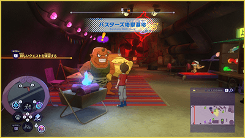
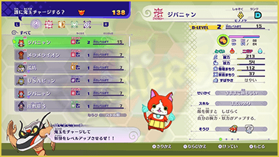

Blasters: Introducción y controles
Si posees "Yo-kai Watch 4: We Look Up at the Same Sky", necesitarás adquirir el DLC de pago para jugar a "Blasters++" (los poseedores de "Yo-kai Watch 4++" no necesitan comprarlo).
Empezar a jugar Blasters++
"Blastres++" es un modo en el que puedes formar un equipo de hasta 4 Yo-kai y jugar diversas misiones. Puedes jugar en modo cooperativo con personas cercanas o lejanas mediante comunicación local o online (hasta 4 jugadores).
Estará disponible tras avanzar en la historia hasta el Capítulo 7 y completar la petición "¡VAMOSVAMOSVAMOS desde el fondo del infierno! (地獄の底からGOGOGO！)".
※ Para disfrutar del modo cooperativo online es necesario suscribirse a Nintendo Switch Online (de pago).
Cómo progresar en Blasters++
Puedes iniciar "Blasters++" desde la "Base Blasters Infernal" en el Yo-kai World.
Habla con Capi-Cachas en la base para desplegarte en diversas misiones.
Usa los "Orbes Oni" obtenidos durante las misiones para fortalecer a tus Yo-kai o para comprar varios objetos en la tienda de Nomevén.

Nivel Blasters y crecimiento
La fuerza de los Yo-kai en "Blasters++" no se representa con su nivel normal, sino con el "Nivel Blasters" (NIVEL-B).
El Nivel Blasters se puede subir entrenando con el "Entrenador Rapidizo" utilizando Orbes Oni.

Controles durante las misiones
| ZL | (Mantener pulsado) Apuntar / (Ⓐ mientras apuntas) Colocar marcador sobre el objetivo |
|---|---|
| L | Hacer señas |
| − | Mostrar menú de chat |
| Stick izquierdo / pulsar stick izquierdo | Moverse / (+ Ⓑ) Correr / (Pulsar) Cambiar el objetivo aliado |
| Cruceta | Arriba / abajo: cambiar de personaje Izquierda / derecha: cambiar objetivo |
| ZR | (Mantener durante espiritación de un Watcher) Absorción de Yo-ki |
| R | Cambiar técnica / (Mantener durante espiritación) Cancelar espiritación |
| + | Mostrar menú de misión |
| Ⓧ | Usar técnica |
| Ⓧ＋Ⓐ | Transformación en forma Shadowside / Great / usar Animáximum |
| Ⓐ | Espiritar, revivir, ¡Bien hecho!, etc... |
| Ⓑ | (Pulsación corta) Esquivar |
| Ⓨ | Atacar |
| Stick derecho / pulsar stick derecho | Mover la cámara / (Mover brevemente) Cambiar objetivo / (Pulsar) Fijar/quitar fijación del objetivo |